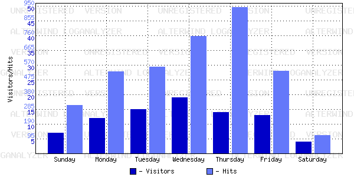

AlterWind Log Analyzer Report
Time Period: 1/31/2005 9:41:36 PM - 7/18/2005 2:15:42 AM
Report Template: General
Average Activity by Day of Week

Day of Week
Hits
Reloads
Cached
Incomplete
Requests
Visitors
Data transfer(KB)
Sunday
312.63
48.67
48.79
0.00
7.17
743
Monday
531.24
91.24
120.40
0.04
12.72
1625
Tuesday
562.58
263.04
82.00
0.08
15.17
2094
Wednesday
759.33
302.63
154.29
0.13
19.33
3044
Thursday
943.75
499.46
83.58
0.08
14.67
2812
Friday
533.71
120.58
115.58
0.00
13.08
1638
Saturday
121.92
40.17
16.33
0.04
4.33
450
Description:
Allows you to see average visitors activity for every day of the week.